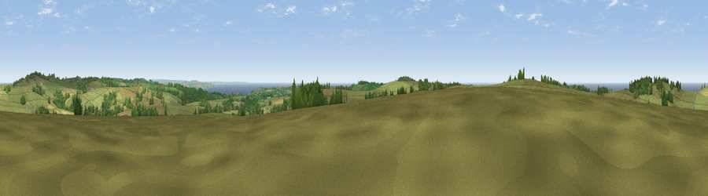

Viewpoint near Newbridge
#6710 in England · top 25% of its area beats it · near NewbridgeWhere it is
The exact computed spot (SW 41062 32650). Click the marker for map links.
The view, rendered

A 360° render of this exact spot computed from the terrain model, tree cover and land cover — summer colours, afternoon light, calibrated against photographs of famous viewpoints. Real trees, hedges and buildings will differ in detail.
The panorama
Grey silhouette: terrain skyline in each direction (720 bearings, Earth curvature and refraction included). Dashed green: skyline with trees (+15 m) and buildings (+8 m) as obstacles. Blue strip: how far the ground is visible on each bearing.
Where the view opens
Wedge length = distance to the farthest visible ground on that bearing (vegetation-aware). Rings at 10, 25 and 50 km.
What fills the view
68% grassland · 13% woodland · 12% water · 5% cropland
Angular shares of the visible panorama (visual magnitude), not map area. Landscape diversity 0.42 (0–1 Shannon).
Key numbers
More beautiful places nearby
The staircase of upgrades: each row has a higher view potential than everything closer. Driving times are estimates from straight-line distance, calibrated against real road routing — check an actual route before setting out.
| Place | Direction | Drive | Score |
|---|---|---|---|
| Viewpoint near Morvah | N · 2 km | ~5 min | 70.1 |
| Viewpoint near Trewellard | W · 3 km | ~7 min | 73.6 |
| Viewpoint near Pendeen | WNW · 3 km | ~7 min | 80.8 |
| Viewpoint near Morvah | N · 3 km | ~8 min | 83.2 |
| Viewpoint near Porthmeor | NNE · 3 km | ~8 min | 84.8 |
| Rosewall Hill | NE · 10 km | ~19 min | 88.0 |
| Viewpoint near Combe Martin | NE · 165 km | ~187 min | 88.9 |
| Holdstone Hill | NE · 167 km | ~188 min | 90.2 |
50.13727, -5.62506 · source: screening · position refined by local search. Computed location — check access rights before visiting.